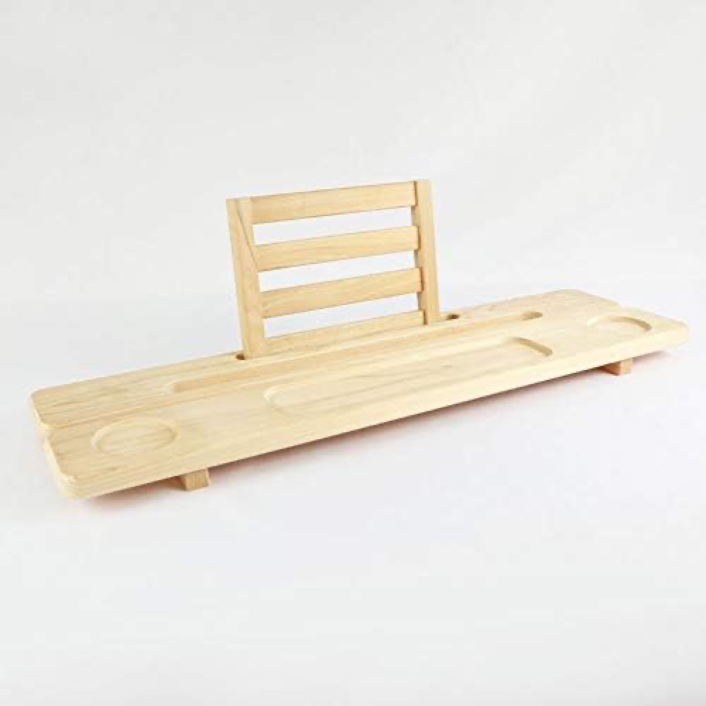
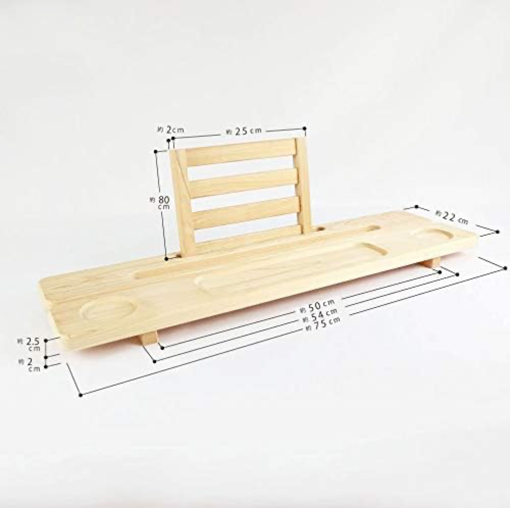
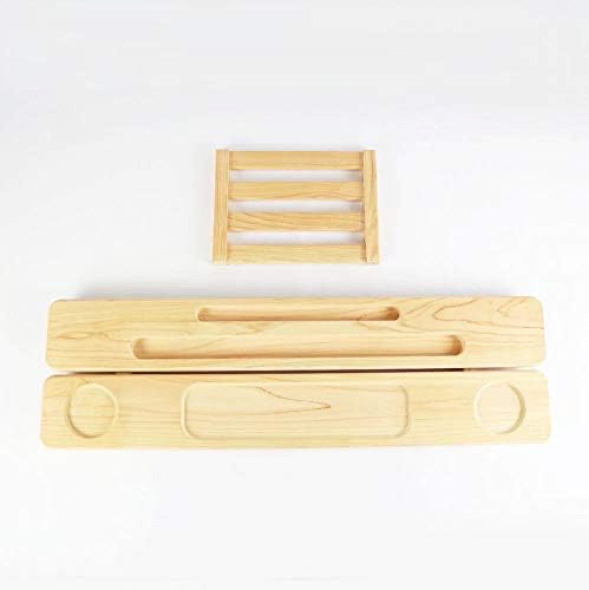
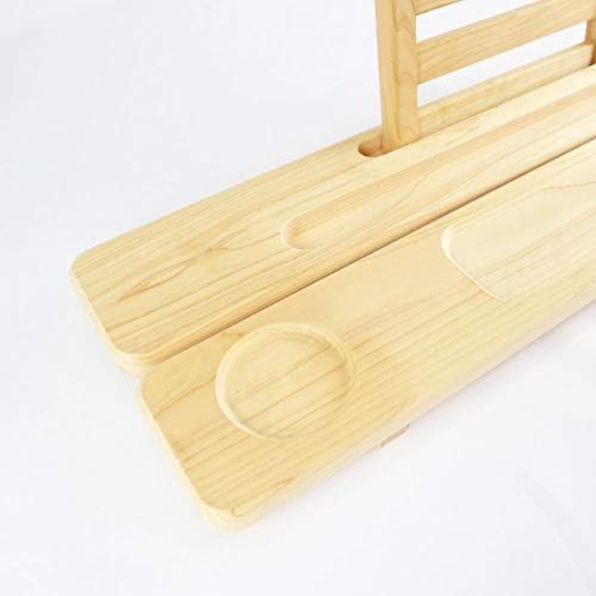
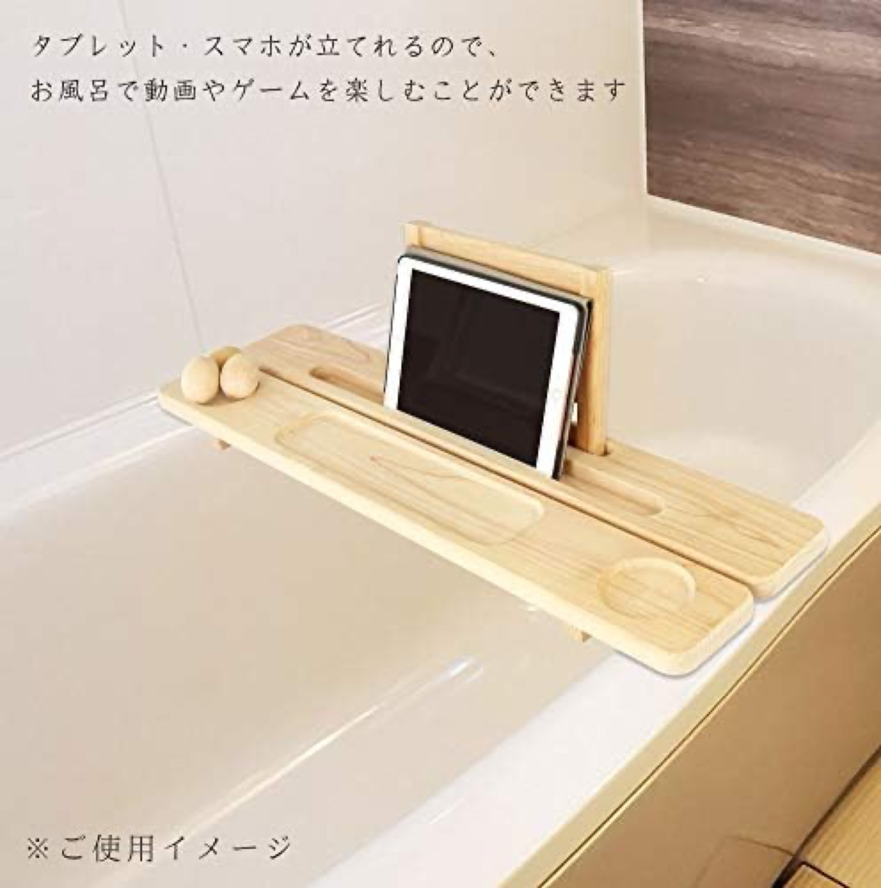
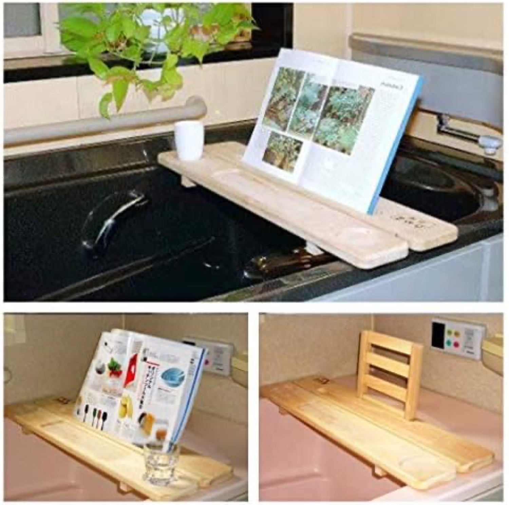

A domestic Japanese-hinoki tray, sold and shipped from Japan. Hinoki is naturally water and rot resistant and aromatic, the aspirational "made in Japan" wood. 4.4★, but at ¥5,650 it barely sells (~2/mo).国産ひのきのトレー、日本から販売・発送。ひのきは本来防水・防腐・芳香、憧れの「国産」材。4.4★だが¥5,650でほぼ売れない（月約2）。






Verdict: authentic but basic. A genuine domestic-hinoki story with a book stand and seven images, but no Brand Store, no video, and a small-maker presentation.評価：本物だが簡素。本物の国産ひのきの物語＋ブックスタンド＋画像7だが、Brand Storeも動画もなく、小規模メーカーの見せ方。
A premium material and story, but priced at ¥5,650 with thin presentation (no Store, no video), so it almost never sells.premium素材と物語だが、¥5,650で見せ方が薄く（Store・動画なし）、ほぼ売れない。
A small domestic maker with no Brand Store and little paid push; it relies on the "国産ひのき / made in Japan" appeal to a narrow premium buyer.Brand Storeも有料出稿も少ない小規模国内メーカー。「国産ひのき」訴求で狭い高級層に依存。
The made-in-Japan premium signal is strong but undersold. We borrow the premium-wood aspiration without the ¥5,650 price or the thin presentation.日本製のプレミアム信号は強いが訴求不足。¥5,650や薄い見せ方なしに、premium木の憧れを借りる。
Premium domestic wood, very slow (~2/mo, typically ~#250k). Like VaeFae teak, it confirms the premium-wood price ceiling.国産premium木、超低速（月約2、通常~#250k）。VaeFaeのチーク同様、premium木の価格天井を裏付ける。
Source: Keepa PRO, 2026-06-18. The high FBA fee (¥975) reflects a large, heavy item.出典：Keepa PRO 2026-06-18。高いFBA（¥975）は大型・重量を反映。
~13% in 1-3★ · hinoki's natural water-resistance keeps the tail short, like teak.1〜3★は約13%。ひのきの天然防水で、チーク同様に尾が短い。
With mold off the table, the documented wood-tray complaints that remain are value (the ¥5,650 price for a simple item) and size/fit. Like teak, the material satisfies; the price suppresses the audience.カビが消えると、残る木製トレーの記録された不満は価格（簡素な品に¥5,650）とサイズ/適合。チーク同様、素材は満足、価格が客を抑える。